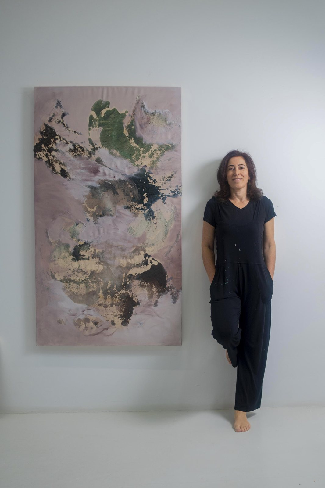

Sobre
Helenara Andrade
Nascida em Porto Alegre/RS. Vive e trabalha em Curitiba/PR.
Meu trabalho artístico é impulsionado pela investigação das inúmeras possibilidades da tinta. Desenvolvo minhas próprias tintas e materiais pictóricos, explorando diferentes formulações, e trabalho com camadas sucessivas, diluições calculadas e cores em constante contraste, buscando criar um diálogo entre o caos e a harmonia.
Espátulas de diferentes tamanhos são minhas ferramentas principais, utilizadas tanto para gerar transições sutis quanto para formar bordas duras e arestas cortantes que emergem da superfície com intensidade. O resultado são superfícies expressivas, nas quais o movimento da tinta materializa conflitos e resoluções internas.
Formação
- Design de Interiores, Universidade Positivo, Curitiba/PR (2016)
- Arte e Mercado, Escola Nano de Art Market (em andamento)
- Processo Criativo, com Juliana dos Santos, Instituto Tomie Ohtake
- Mentoria Negócios de Arte, Adriana Braga
Exposições individuais
- 2025 · Strata, curadoria de João Paulo Carvalho, Curitiba/PR
- 2023 · Rastros, curadoria de João Paulo Carvalho, Curitiba/PR
Exposições coletivas
- 2026 · Beyond Translations, Saphira & Ventura Gallery, Nova York/EUA
- 2024 · Diálogos para o Planeta G20, Parque Maria da Glória, Rio de Janeiro/RJ
- 2024 · Empower Her Art Forum, Museu da Civilização Egípcia, Cairo/Egito
- 2024 · When Art Meets Carnival, Saphira & Ventura Gallery e Espaço BB, Rio de Janeiro/RJ
- 2023 · Miami Art Week, Saphira & Ventura Gallery, Miami/EUA
- 2023 · Revival, Saphira & Ventura Gallery, Nova York/EUA
Seleções
- 2022 · 5º Salão de Artes de Pinhais, Pinhais/PR